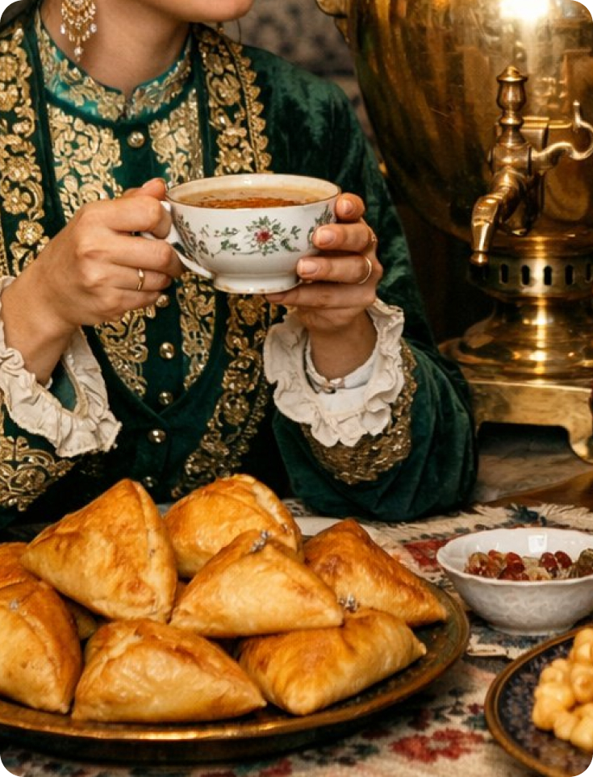
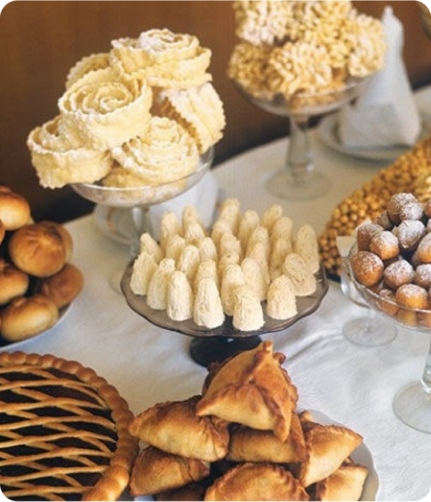

Чаепитие по-татарски. Неотъемлемые атрибуты чайного стола татар
У татар чай — это не просто напиток. Это жест приглашения, знак расположения и уважения к гостю.
С детства мы знаем: если в доме появился человек, его встречают не вопросом «что будешь пить?», а молчаливой теплотой — на стол ставят чашку, чайник и всё, что найдётся сладкого. Сказать «не предложила даже чаю» — все равно что признать холод в доме. Поэтому чай у татар — это язык гостеприимства.
История появления чая в татарской культуре уходит в XVII–XVIII века. Сначала чай был редкостью, роскошью — его пили лишь в зажиточных семьях и по большим случаям. Но постепенно чай «обжился» в татарском быту, стал привычным и даже необходимым. Уже тогда появилось выражение «чайга чакыру» — позвать на чай. Это было приглашение не просто поесть сладкого, а быть рядом, поговорить, услышать друг друга.
С этим связан и удивительный короткий татарский бытовой юмор: «Когда женщина узнала про чай, забыла про пряжу».
За чаем сидели долго. Иногда — весь вечер. Путешественники XIX века, проезжавшие через Казань, отмечали особый вкус татарского чая. Его везли по суше из Китая, и он сохранял аромат лучше, чем чай, прибывший в Европу морем. Гости удивлялись: напиток, казалось бы, один и тот же — но вкус в татарских домах был тоньше, глубже, мягче. Однако дело было не только в чае. Дело было — в самом чаепитии.

“Татарское чаепитие редко бывает быстрым. Главное разговор.”
Татарское чаепитие редко бывает быстрым. Оно не про ритуальность, как в Японии, и не про строгое следование форме, как в Китае. Главное — разговор.
Чай подливают понемногу, чтобы он всегда оставался горячим, живым. Если разговор долгий, чашку наполняют не до краёв — чтобы снова и снова возвращаться к чайнику, к теплу, к движению беседы.
Чай часто пьют с молоком. Это традиция, пришедшая из деревенского уклада: плиточный чай был крепким и терпким, и молоко смягчало его вкус. Иногда же наоборот — в горячее молоко добавляют чай. В итоге получается напиток удивительно мягкий, нежный, согревающий.
Не редкость — чай с травами: душицей (“матрушкой“), чабрецом, липовым цветом, листьями смородины или малины. Это чай, который пахнет летом в деревне, распахнутыми окнами, сушащимся на солнце бельём и тихими вечерними разговорами. Но, конечно, что за чай без угощений?
Татарский чайный стол — это маленький праздник даже в самый обычный день.
Чак-чак — золотистый, медовый, хрустящий. Бауырсак — тёплый, мягкий, как детство. «Кош теле» — тонкий хворост, легкий, как разговор ни о чём. Пастила, курага, мёд, густой домашний каймак, варенье — клубничное, малиновое, вишнёвое. Не просто «к чаю», а вместе с чаем.
Главный символ татарского чаепития — самовар.
Он стоял не просто как прибор для кипячения воды. Самовар был знаком достатка, уюта, семейного тепла. Его ставили на стол, сверху — чайник, чтобы заварка была постоянно горячей. Звук потрескивающих углей, лёгкое шипение пара — всё это создавало особую атмосферу ожидания: сейчас сядем, будем говорить, слушать, смеяться.
Сегодня многие пользуются электрическими самоварами, но в некоторых домах всё ещё бережно хранят те самые — на шишках, на щепках, пахнущие дымком детства. И когда их достают — это всегда особый день.

“Чаепитие по‑татарски — это больше, чем чай.”
Чаепитие по‑татарски — это больше, чем чай. Это медленное время. Это уважение и внимание. Это возможность быть вместе без суеты. Это тепло, которое передают не словами, а тем, как заботливо подливают тебе горячий чай. Чай здесь — повод собраться и остаться рядом.